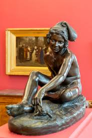

Formé au dessin et au modelage à Dijon dans l’école de dessin de François Desvosges, Rude arrive à Paris en 1807 et entre à l’École des Beaux-Arts en 1809. Premier prix de Rome en 1812, avec la chute de l’Empire, Rude ne se rend pas en Italie mais s’exile de 1815 à 1827 en Belgique avec son protecteur Louis Frémiet. Rentré à Paris, il ne participera que très tard au Salon, à partir de 1827. Son œuvre la plus emblématique reste La Marseillaise, sculptée pour l’Arc de Triomphe de l’Étoile. Se dégageant de l’académisme, Rude en dépasse les canons pour se livrer à une observation précise de la nature et va changer le regard sur l’antique. C’est en 1831, lors de sa seconde apparition au Salon, qu’il montre le plâtre, puis en 1833 le marbre de ce Jeune Pêcheur napolitain jouant avec une tortue à la veine pittoresque et à l’équilibre entre antique et naturel . Nous en avons ici la version réduite en bronze réalisée par l’atelier Barbedienne fondé par Ferdinand Barbedienne (1810-1892) dans l’objectif de commercialiser des modèles réduits de sculpture pour orner les intérieurs. Figure de jeune pêcheur que Rude emprunte à la peinture et qui suscita la controverse entre les tenants du classicisme et du romantisme. Pureté de la ligne et justesse des formes pour les uns, pittoresque et modernité du sujet pour les autres. De fait, si le corps nu du jeune pêcheur, identifiable par son bonnet et son filet, est encore empreint des critères de mesure du classicisme, c’est son naturel, le sentiment de vie et l’expression de son visage rieur aux traits populaires, le réalisme de son bonnet de feutre et de ses cheveux mouillés, qui en font toute la modernité.
